vignettes/prepare_Inputs/preprocess_on_validation.Rmd
preprocess_on_validation.RmdThis RAVmodel is built using top 20 PCs of 536 studies. The number of clusters was decided by d=2.25 and MSigDB C2 gene sets were used for GSEA-based annotation.
data.dir <- system.file("extdata", package = "GenomicSuperSignaturePaper")
RAVmodel <- readRDS(file.path(data.dir, "RAVmodel_C2.rds"))
RAVmodel## class: PCAGenomicSignatures
## dim: 13934 4764
## metadata(7): cluster size ... updateNote version
## assays(1): RAVindex
## rownames(13934): CASKIN1 DDX3Y ... CTC-457E21.9 AC007966.1
## rowData names(0):
## colnames(4764): RAV1 RAV2 ... RAV4763 RAV4764
## colData names(4): RAV studies silhouetteWidth gsea
## trainingData(2): PCAsummary MeSH
## trainingData names(536): DRP000987 SRP059172 ... SRP164913 SRP188526
updateNote(RAVmodel)## [1] "536 refine.bio studies/ top 90% varying genes/ GSEA with MSigDB C2"We preprocessed gene expression profiles of colon cancer (both microarry and RNA sequencing datasets) in multiple different ways and applied GenomicSuperSignature to see the effect of proprocessing.
Normalization usually means to scale a variable to have a values between 0 and 1, while standardization transforms data to have a mean of zero and a standard deviation of 1.
I applied calculateScore directly on these expression matrices and saved the RAV-assigned scores in eSets objects. (described in Results/CRC/R/Fig4_add_sapmleScore.R) These scores were used for subtyping (Results/CRC/repeat_Fig4A.Rmd) and clinical variable analysis (Results/CRC/repeat_Fig4C.Rmd)
But for validation (Results_temp/TCGA/TCGA_5studies.Rmd), I did log-transformation before applying validate function. Also when I search for associated RAVs using metadata, eSets were centered but not transformed before calculateScore applied.
–> Need to make these all consistent!!
## ExpressionSet (storageMode: lockedEnvironment)
## assayData: 19827 features, 566 samples
## element names: exprs
## protocolData: none
## phenoData
## sampleNames: GSM971957 GSM971958 ... GSM972522 (566 total)
## varLabels: unique_patient_ID alt_sample_name ... RAV4350 (123 total)
## varMetadata: labelDescription
## featureData
## featureNames: A1BG A1BG-AS1 ... PCDHGA12 (19827 total)
## fvarLabels: probeset gene
## fvarMetadata: labelDescription
## experimentData: use 'experimentData(object)'
## pubMedIds: 23700391
## Annotation: hg-u133_plus_2## GSM971957 GSM971958 GSM971959 GSM971960
## A1BG 3.633175 4.045605 3.782781 3.890177
## A1BG-AS1 3.885552 4.243311 4.359792 4.064965
## A1CF 6.935159 8.719033 7.705797 8.252904
## A2M 9.812345 10.860767 8.883904 10.072542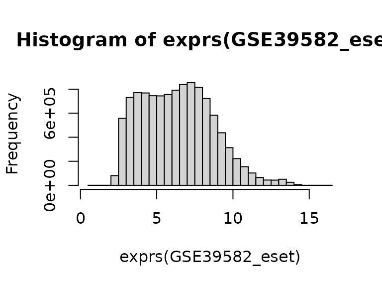
val_all <- validate(exprs(GSE39582_eset), RAVmodel)
heatmapTable(val_all)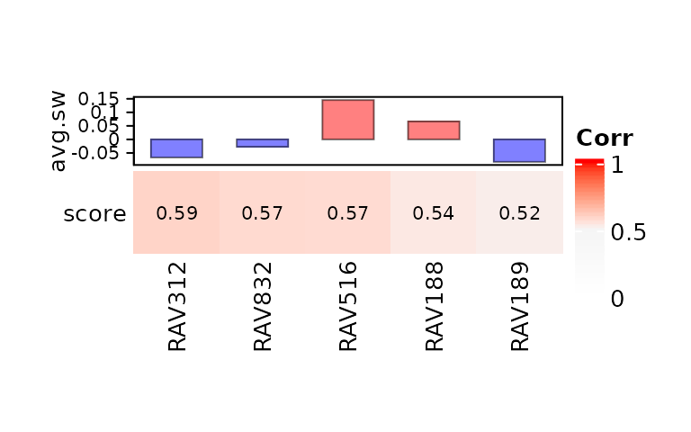
This is used for validation. 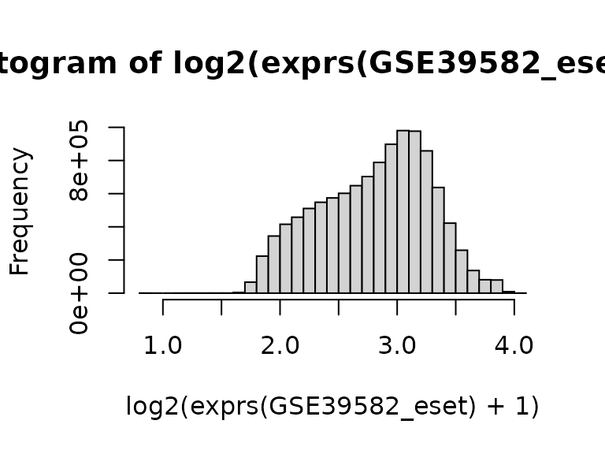
val_all <- validate(log2(exprs(GSE39582_eset)+1), RAVmodel)
heatmapTable(val_all)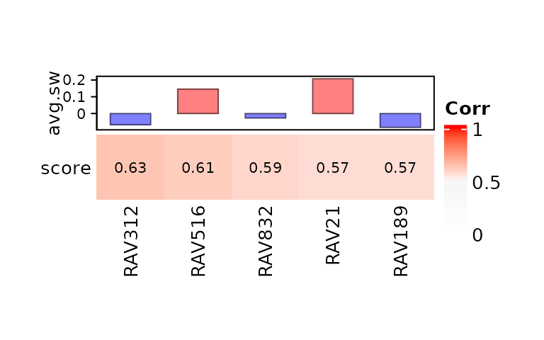
This was used for metadata-based searching.
exprs_tmp <- exprs(GSE39582_eset)
exprs_tmp <- apply(exprs_tmp, 1, function(x) x - mean(x)) %>% t
hist(exprs_tmp)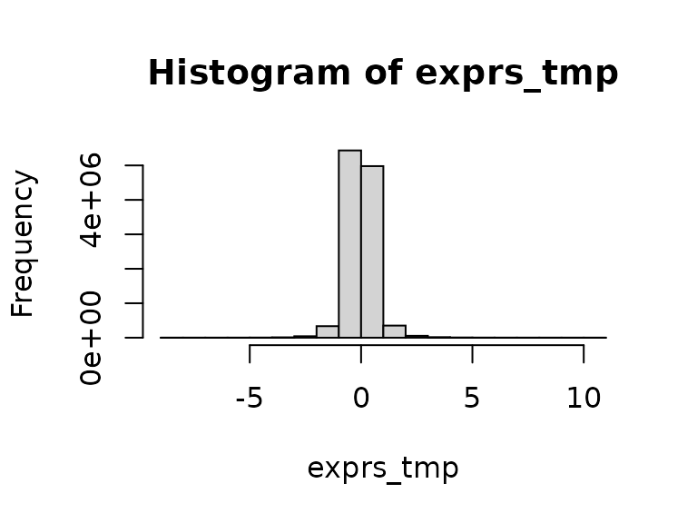
val_all <- validate(exprs_tmp, RAVmodel)
heatmapTable(val_all)
dat_dir <- "~/data2/GenomicSuperSignaturePaper/Results/CRC/data/eSets_new"
load(file.path(dat_dir, "TCGA.COAD_eset.RData"))
TCGA.COAD_eset## ExpressionSet (storageMode: lockedEnvironment)
## assayData: 17814 features, 126 samples
## element names: exprs
## protocolData: none
## phenoData
## sampleNames: TCGA.A6.3810 TCGA.AA.3975 ... TCGA.A6.2686 (126 total)
## varLabels: unique_patient_ID alt_sample_name ... RAV4350 (123 total)
## varMetadata: labelDescription
## featureData
## featureNames: 15E1.2 2'-PDE ... ZZZ3 (17814 total)
## fvarLabels: probeset gene
## fvarMetadata: labelDescription
## experimentData: use 'experimentData(object)'
## pubMedIds: 22810696
## Annotation: agilent-014850 whole human genome microarray 4x44k g4112f
exprs(TCGA.COAD_eset)[1:4, 1:4]## TCGA.A6.3810 TCGA.AA.3975 TCGA.AA.3845 TCGA.AA.3979
## 15E1.2 -0.5940000 -0.102250 0.222000 1.4867500
## 2'-PDE -0.2958750 0.415625 0.215375 -0.0059375
## 7A5 2.9385000 3.116500 3.259000 2.7055000
## A1BG -0.8536667 -1.787000 -1.743000 -2.1760000This is used to get score.
hist(exprs(TCGA.COAD_eset))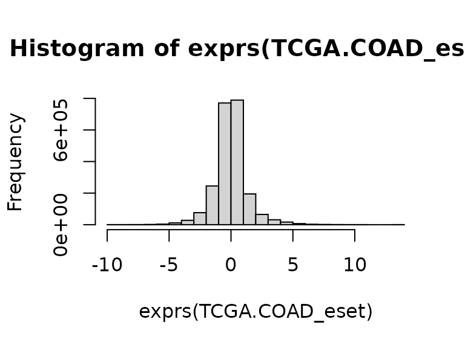
val_all <- validate(exprs(TCGA.COAD_eset), RAVmodel)
heatmapTable(val_all)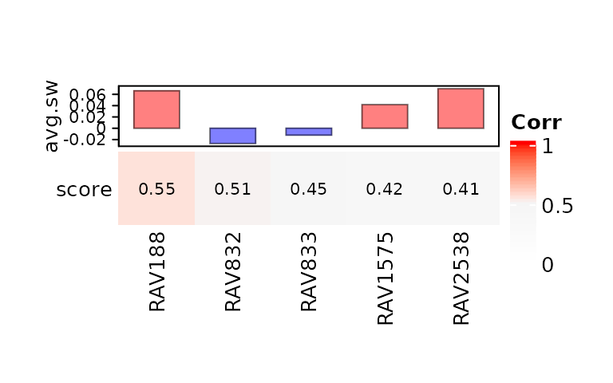
This is used for validation.
## Warning in hist(log2(exprs(TCGA.COAD_eset) + 1)): NaNs produced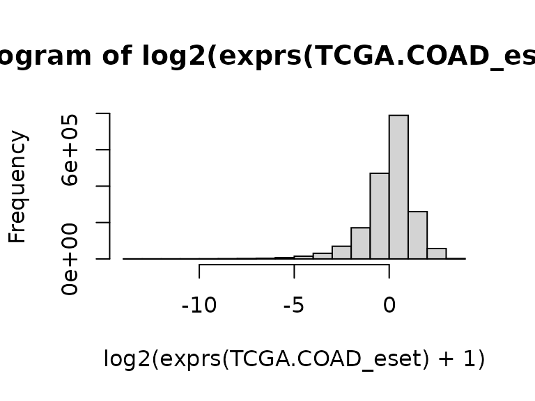
## Warning in validate(log2(exprs(TCGA.COAD_eset) + 1), RAVmodel): NaNs produced
heatmapTable(val_all)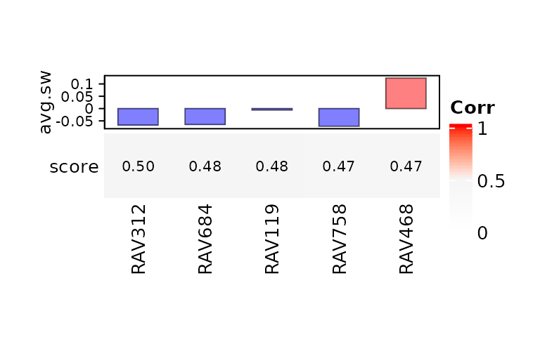
This was used for metadata-based searching.
exprs_tmp <- exprs(TCGA.COAD_eset)
exprs_tmp <- apply(exprs_tmp, 1, function(x) x - mean(x)) %>% t
hist(exprs_tmp)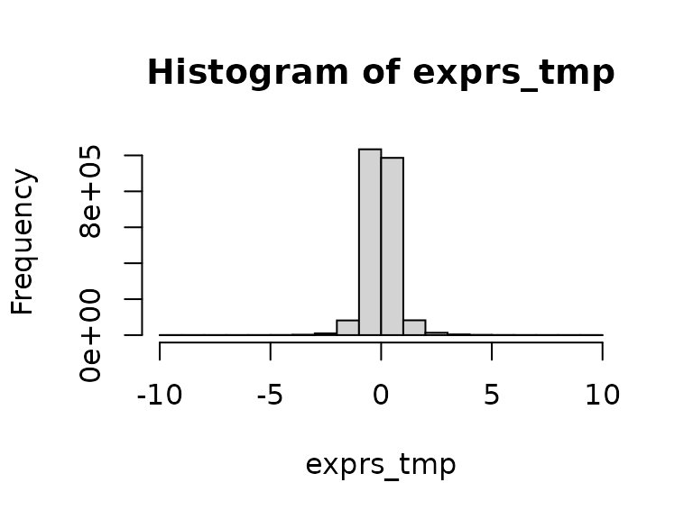
val_all <- validate(exprs_tmp, RAVmodel)
heatmapTable(val_all)## ExpressionSet (storageMode: lockedEnvironment)
## assayData: 20502 features, 195 samples
## element names: exprs
## protocolData: none
## phenoData
## sampleNames: TCGA.A6.2684 TCGA.A6.2682 ... TCGA.G4.6627 (195 total)
## varLabels: unique_patient_ID alt_sample_name ... RAV4350 (123 total)
## varMetadata: labelDescription
## featureData
## featureNames: ? A1BG ... ZZZ3 (20502 total)
## fvarLabels: probeset gene
## fvarMetadata: labelDescription
## experimentData: use 'experimentData(object)'
## pubMedIds: 22810696
## Annotation: NA
exprs(TCGA.RNASeqV2_eset)[1:4, 1:4]## TCGA.A6.2684 TCGA.A6.2682 TCGA.AA.3495 TCGA.AA.3492
## ? 10.3736442 10.139236 9.873481 10.256330
## A1BG 5.3181397 4.847781 4.338489 5.076773
## A1CF 6.1873204 7.984246 8.193911 7.824986
## A2BP1 0.5496199 0.000000 1.767189 0.000000This is used to get score.
hist(exprs(TCGA.RNASeqV2_eset))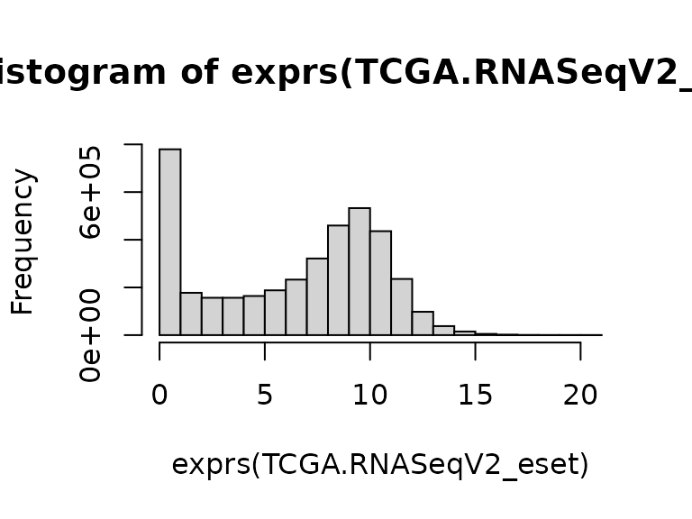
val_all <- validate(exprs(TCGA.RNASeqV2_eset), RAVmodel)
heatmapTable(val_all)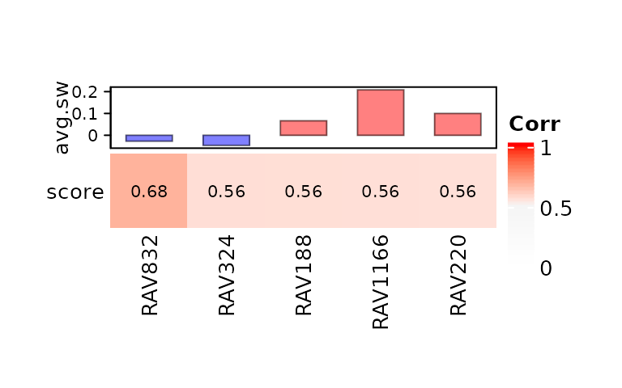
This is used for validation.
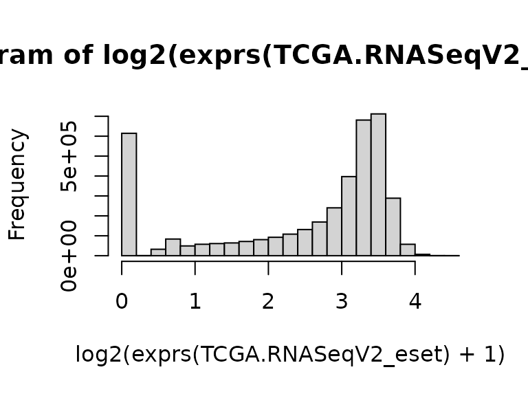
val_all <- validate(log2(exprs(TCGA.RNASeqV2_eset)+1), RAVmodel)
heatmapTable(val_all)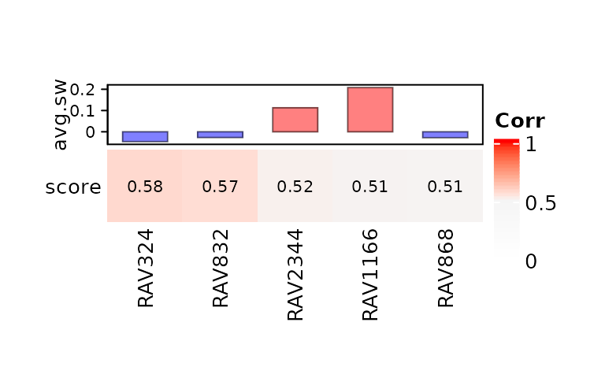
This was used for metadata-based searching.
exprs_tmp <- exprs(TCGA.RNASeqV2_eset)
exprs_tmp <- apply(exprs_tmp, 1, function(x) x - mean(x)) %>% t
hist(exprs_tmp)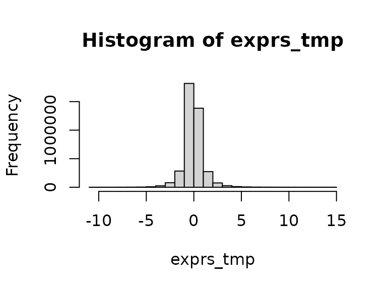
val_all <- validate(exprs_tmp, RAVmodel)
heatmapTable(val_all)Unified gene-level mRNA expression values
ma <- curatedTCGAData::curatedTCGAData("COAD", "mRNAArray", dry.run = FALSE)
save(ma, file = "data/ma.rda")
load("data/ma.rda")
ma[[1]]## class: SummarizedExperiment
## dim: 17814 172
## metadata(3): filename build platform
## assays(1): ''
## rownames(17814): ELMO2 CREB3L1 ... AQP7 CTSC
## rowData names(0):
## colnames(172): TCGA-A6-2671-11A-01R-1758-07
## TCGA-A6-2672-01A-01R-0826-07 ... TCGA-AY-4070-01A-01R-1113-07
## TCGA-AY-4071-01A-01R-1113-07
## colData names(0):
assay(ma[[1]])[1:4, 1:4]## DataFrame with 4 rows and 4 columns
## TCGA-A6-2671-11A-01R-1758-07 TCGA-A6-2672-01A-01R-0826-07
## <numeric> <numeric>
## ELMO2 -0.625333 -0.380083
## CREB3L1 2.092250 1.485000
## RPS11 0.730375 1.322375
## PNMA1 -0.219750 -0.293250
## TCGA-A6-2674-01A-02R-0821-07 TCGA-A6-2676-11A-01R-1758-07
## <numeric> <numeric>
## ELMO2 -0.203750 -0.921333
## CREB3L1 2.498750 1.215500
## RPS11 0.483125 1.459250
## PNMA1 -0.463250 1.674750This dataset is identical to TCGA.COAD_eset.
exprs(TCGA.COAD_eset)[head(rownames(assay(ma[[1]])), 4),
c("TCGA.A6.2671", "TCGA.A6.2672", "TCGA.A6.2674")]## TCGA.A6.2671 TCGA.A6.2672 TCGA.A6.2674
## ELMO2 -0.6253333 -0.3800833 -0.203750
## CREB3L1 2.0922500 1.4850000 2.498750
## RPS11 0.7303750 1.3223750 0.483125
## PNMA1 -0.2197500 -0.2932500 -0.463250
##### Raw read counts from GSE62944 from ExperimentHub #########################
tcga <- GSEABenchmarkeR::loadEData("tcga", cache = FALSE, paired = FALSE, map2entrez = FALSE)
rseq_raw_count <- tcga$COAD
save(rseq_raw_count, file = "data/rseq_raw_count.rda")
load("data/rseq_raw_count.rda")
rseq_raw_count## class: SummarizedExperiment
## dim: 13210 524
## metadata(2): dataId dataType
## assays(1): exprs
## rownames(13210): A1CF A2LD1 ... ZZEF1 ZZZ3
## rowData names(0):
## colnames(524): TCGA-DM-A28G-01A-11R-A16W-07
## TCGA-AA-A004-01A-01R-A00A-07 ... TCGA-A6-2684-11A-01R-A32Z-07
## TCGA-AA-3518-11A-01R-1672-07
## colData names(3): sample type GROUP
assay(rseq_raw_count)[1:4, 1:4]## TCGA-DM-A28G-01A-11R-A16W-07 TCGA-AA-A004-01A-01R-A00A-07
## A1CF 1501 76
## A2LD1 390 68
## A2M 7637 1439
## A4GALT 122 242
## TCGA-CK-4950-01A-01R-1723-07 TCGA-D5-5539-01A-01R-1653-07
## A1CF 2048 1995
## A2LD1 518 512
## A2M 22745 19599
## A4GALT 462 462
val_all <- validate(assay(rseq_raw_count), RAVmodel)
heatmapTable(val_all)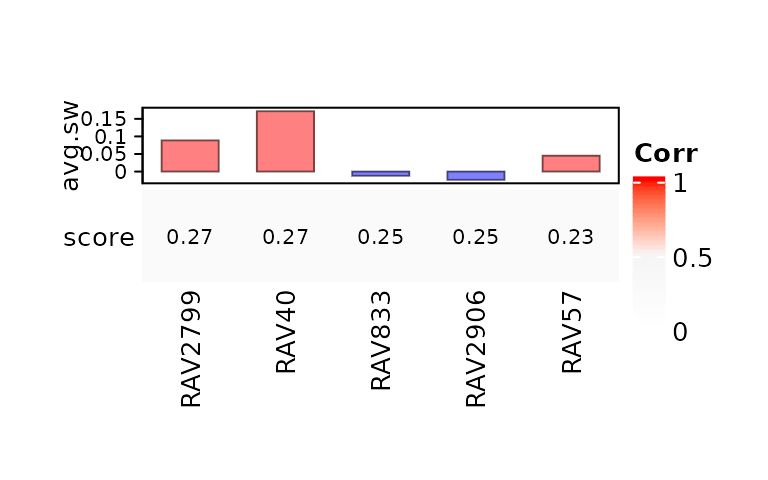
## TCGA-DM-A28G-01A-11R-A16W-07 TCGA-AA-A004-01A-01R-A00A-07
## A1CF 10.552669 6.266787
## A2LD1 8.611025 6.108524
## A2M 12.898979 10.491853
## A4GALT 6.942515 7.924813
## TCGA-CK-4950-01A-01R-1723-07 TCGA-D5-5539-01A-01R-1653-07
## A1CF 11.000704 10.962896
## A2LD1 9.019591 9.002815
## A2M 14.473325 14.258566
## A4GALT 8.854868 8.854868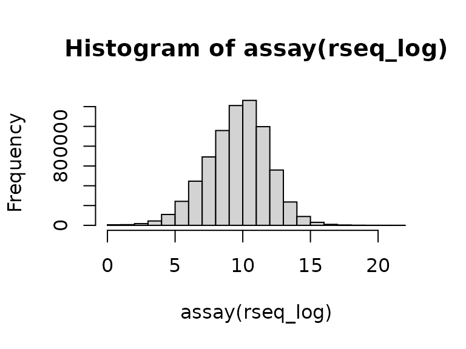
val_all <- validate(assay(rseq_log), RAVmodel)
heatmapTable(val_all)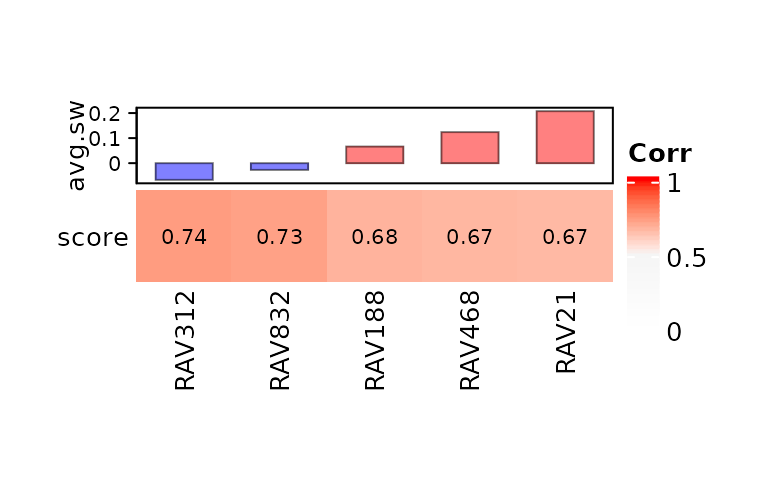
Upper quartile normalized RSEM TPM gene expression values
rseq_geneNorm <- curatedTCGAData::curatedTCGAData("COAD", "RNASeq2GeneNorm", dry.run = FALSE)
save(rseq_geneNorm, file = "data/rseq_geneNorm.rda")
load("data/rseq_geneNorm.rda")
rseq_geneNorm[[1]]## class: SummarizedExperiment
## dim: 20501 191
## metadata(0):
## assays(1): ''
## rownames(20501): A1BG A1CF ... psiTPTE22 tAKR
## rowData names(0):
## colnames(191): TCGA-A6-2671-01A-01R-1410-07
## TCGA-A6-2672-01A-01R-0826-07 ... TCGA-CM-4752-01A-01R-1410-07
## TCGA-CM-5341-01A-01R-1410-07
## colData names(0):
assay(rseq_geneNorm[[1]])[1:4, 1:4]## TCGA-A6-2671-01A-01R-1410-07 TCGA-A6-2672-01A-01R-0826-07
## A1BG 25.4180 60.7006
## A1CF 10.8359 15.2866
## A2BP1 6.1920 0.0000
## A2LD1 131.2848 305.9618
## TCGA-A6-2674-01A-02R-0821-07 TCGA-A6-2676-01A-01R-0826-07
## A1BG 54.9872 32.5974
## A1CF 122.7621 107.4380
## A2BP1 0.0000 292.7981
## A2LD1 143.7980 205.6671
val_all <- validate(assay(rseq_geneNorm[[1]]), RAVmodel)
heatmapTable(val_all)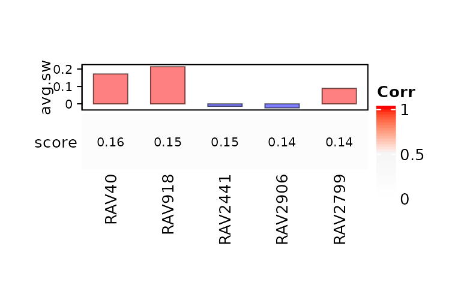
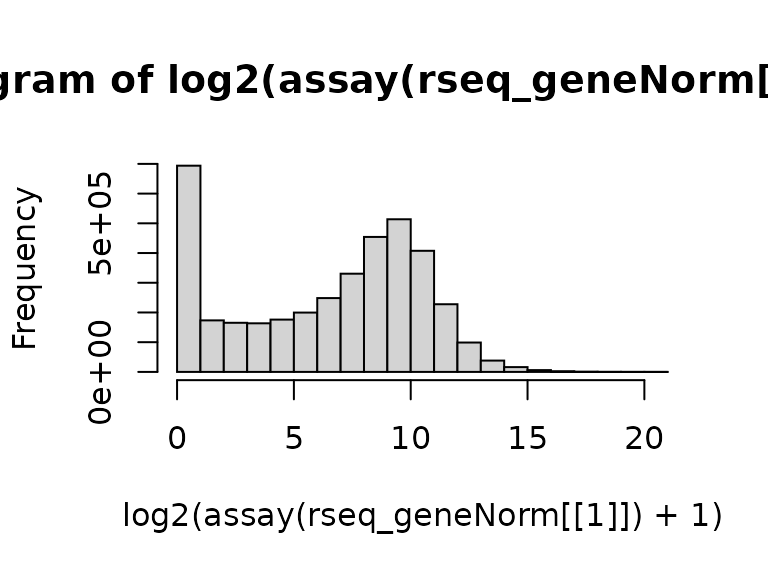
val_all <- validate(log2(assay(rseq_geneNorm[[1]]) + 1), RAVmodel)
heatmapTable(val_all)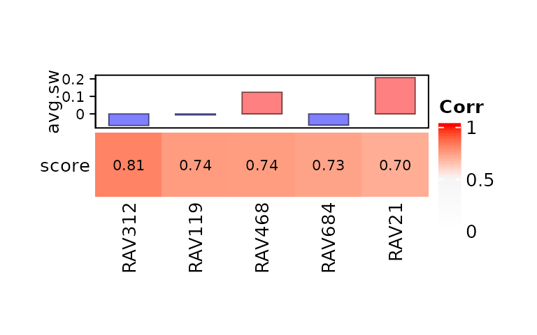
val_all <- validate(log2(x+1), RAVmodel)
heatmapTable(val_all)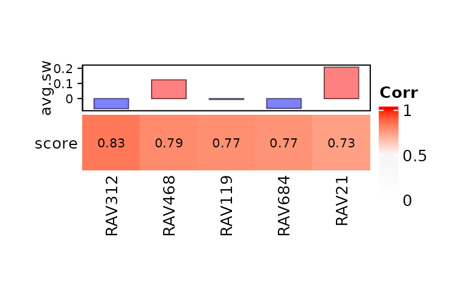
RSEM TPM gene expression values
rseq_gene <- curatedTCGAData::curatedTCGAData("COAD", "RNASeqGene", dry.run = FALSE)
save(rseq_gene, file = "data/rseq_gene.rda")
load("data/rseq_gene.rda")
rseq_gene[[1]] ## class: SummarizedExperiment
## dim: 20502 10
## metadata(0):
## assays(1): ''
## rownames(20502): A1BG A1CF ... psiTPTE22 tAKR
## rowData names(0):
## colnames(10): TCGA-AA-3841-01A-01R-0905-07 TCGA-AA-3866-01A-01R-1022-07
## ... TCGA-AA-3979-01A-01R-1022-07 TCGA-AA-3980-01A-02R-1022-07
## colData names(0):
assay(rseq_gene[[1]])[1:4, 1:4]## TCGA-AA-3841-01A-01R-0905-07 TCGA-AA-3866-01A-01R-1022-07
## A1BG 28 48
## A1CF 112 211
## A2BP1 8 7
## A2LD1 142 165
## TCGA-AA-3870-01A-01R-1022-07 TCGA-AA-3939-01A-01R-1022-07
## A1BG 54 77
## A1CF 51 176
## A2BP1 29 3
## A2LD1 183 456
val_all <- validate(assay(rseq_gene[[1]]), RAVmodel)
heatmapTable(val_all)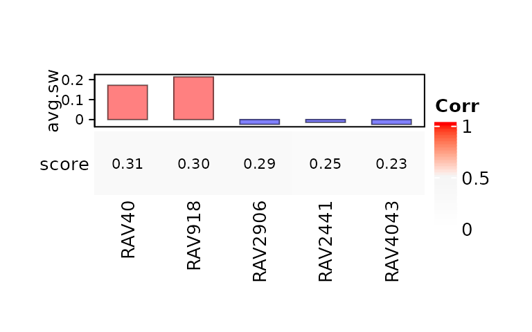
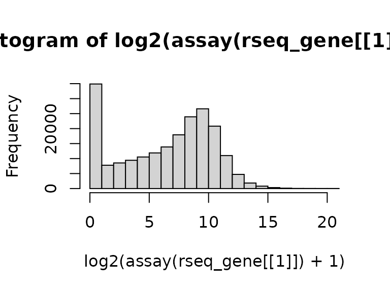
val_all <- validate(log2(assay(rseq_gene[[1]]) + 1), RAVmodel)
heatmapTable(val_all)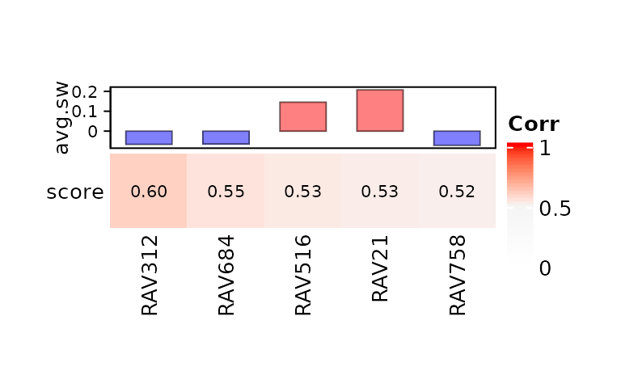
## Exclude genes with TPM < 2 in more than half of the samples
x <- assay(rseq_gene[[1]])
rs <- rowSums(assay(x) > 2)
keep <- rs >= ncol(x) / 2
x <- x[keep,]
hist(log2(x+1))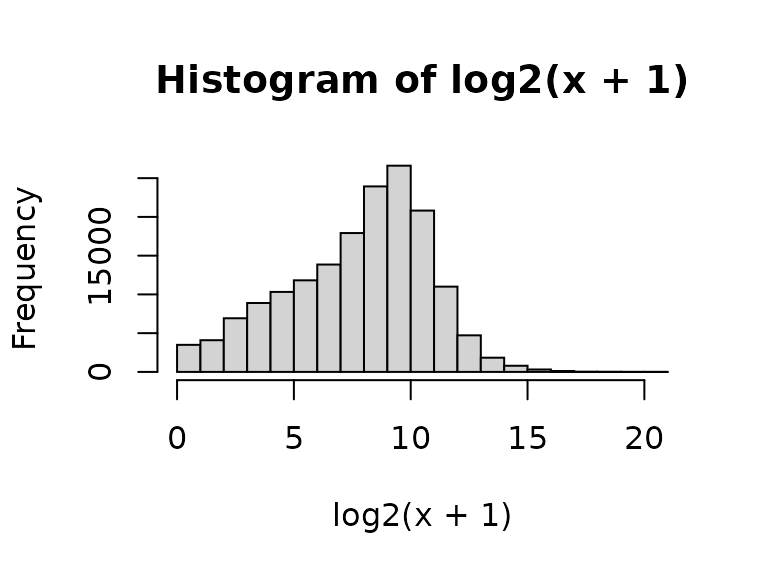
val_all <- validate(log2(x+1), RAVmodel)
heatmapTable(val_all)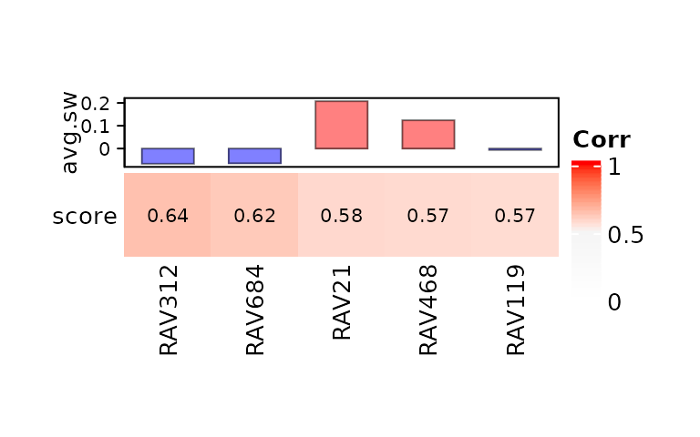
s1 <- colnames(TCGA.COAD_eset) %>% gsub("\\.", "-", .)
s2 <- colnames(TCGA.RNASeqV2_eset) %>% gsub("\\.", "-", .)
s3 <- colnames(ma[[1]]) %>% stringr::str_extract(., "TCGA.{8}")
s4 <- colnames(rseq_raw_count) %>% stringr::str_extract(., "TCGA.{8}")
s5 <- colnames(rseq_geneNorm[[1]]) %>% stringr::str_extract(., "TCGA.{8}")
s6 <- colnames(rseq_gene[[1]]) %>% stringr::str_extract(., "TCGA.{8}")
common_ma_samples <- intersect(s1, s3)